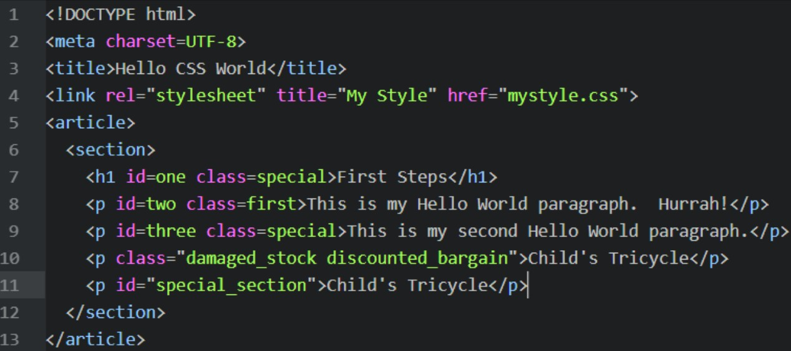

Discovery Log
Week 1
Most Useful Website -https://www.google.co.uk/
I chose this as it is host to a vast amount of information that is easily accessible by both me and others, it’s easily accessible as it’s not very demanding on an internet connection or on the machine’s capability to load the downloaded web pages.
Worst Website -http://www.suzannecollinsbooks.com/
I have chosen this website for the worst website as the basic design techniques used on a website are lacking any polish. Also, it uses very bland colour schemes that almost makes you want to go to sleep.
Week 2
In terms of choosing a capable text editor, I have nominated to go for Atom. There are several reasons behind this, firstly, I have used this extensively in the past, but I am going to look into using Notepad++ or Brackets also.
Week 3
Social engineering is potent threat to our cyber security (refer to coursework 1 - Literature review (Mitigating Exposure of Personal Information Online).
Week 5
The importance of CSS (Cascading Style Sheets). It is vastly superior than solely HTML as it can set rules for certain tags and allows you to define the meaning of tags, without having to duplicate a lot of code that just HTML would force you to use.
p {
background: red;
color: white;
}
Here p is the selector, the thing the tag is selecting to change, you can use * to select EVERYTHING. Background and color are the attributes. Red and white are the properties.
Week 6
The term em’s comes from old printing press days where they would use the size of a capital ‘M’ in the current font to define how long the length of a sentence in going to be
Week 7
In the worksheet for week 7 (week 1 of learning CSS), I learned how I can select a certain piece of a HTML document to apply some formatting to. See below HTML then CSS respectively, followed up with a picture of what is output as a result:
